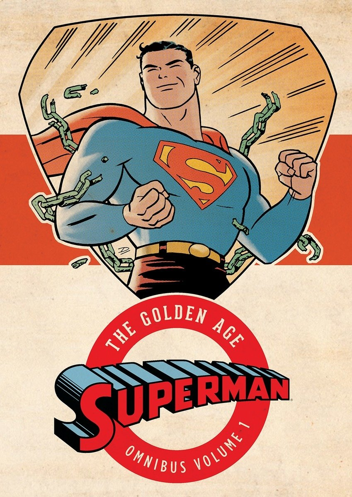

Superman, if you somehow don't know the story of THE go-to guy when it comes to superheroes, is the sole survivor of the destroyed planet Krypton (Though that's not the case anymore). Adopted by a kindly couple in Smallville, Kansas, Superman discovers he is a superhuman under a yellow sun, and sets about using these great powers for Truth, Justice, and the American Way!
This volume collects issues 1-31 of Action Comics, issues 1-7 of Superman, and issues 1-2 of New York World's Fair Comics.
Quite possibly the biggest selling point this book has is its contents: The birth of an icon and his subsequent evolution. This is what I liked the most out of anything in the book: The ability to witness Superman's development as a concept and a character, from his beginnings as a rough-and-tumble hero who operated by his own rules to the paragon of Lawful Good that we know him to be today. There are also interesting little disrepancies, such as Clark Kent working for the Daily Star instead of the Daily Planet, and being found by a passing motorcyclist who hands him off to an orphanage where *then* he gets adopted, instead of the more familiar "rocket crashes near a farm, couple takes him in" that comic fans are familiar with today.
At the same time, the early installment weirdness that serves as the volume's greatest strength is also its greatest weakness. The cast of characters isn't very colorful, and Superman opts to face off against societal problems instead of, say, punching out supervillains. In addition, once Superman arrives, you can for the most part guarantee the ensuing battle against today's baddie will be skewed entirely in Superman's favor.
I'd recommend this to comic book fans, but to the general public? I'd say you could pass this one up. The Superman in this book is decidedly NOT the Superman the general public is familiar with today, and most of his ensemble cast (by that I mean the supervillains) have yet to be introduced, creating a more down to earth Superman that rarely faces any real problems.
 Click here to go back to the main page. Sandman Green Arrow Shazam/Captain Marvel Luke Cage